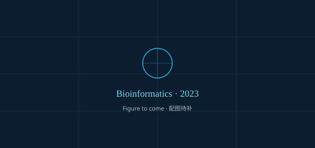
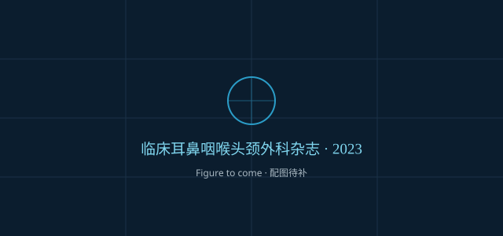
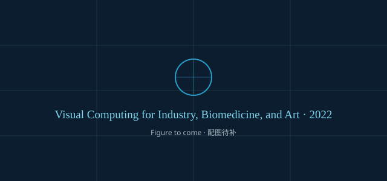

By Application · 05
Other Clinical Areas
AI applied beyond the main pillars: nuclear medicine, critical care, pediatric ENT, pandemic imaging, and open-source virtual endoscopy.
Overview
AI applied beyond the main pillars: nuclear medicine, critical care, pediatric ENT, pandemic imaging, and open-source virtual endoscopy.
- End-to-end lesion detection in whole-body bone scintigraphy
- Risk stratification for acute kidney injury
- Open-source CT virtual endoscopy
05 · Selected work
Selected work
Each card: figure on top, key points below.
01

An end-to-end multi-task system of automatic lesion detection and anatomical localization in whole-body bone scintigraphy by deep learning
Bioinformatics · 2023
- End-to-end lesion detection and anatomical localization in whole-body bone scans.
- Multi-task deep learning for nuclear medicine.
02

Development and validation of a risk stratification model for predicting the mortality of acute kidney injury in critical care patients
Annals of Translational Medicine · 2021
- Risk stratification model for acute kidney injury in critical care.
- Development and validation on clinical data.
03

基于 U-Net 网络的儿童腺样体及鼻咽气道图像分割
临床耳鼻咽喉头颈外科杂志 · 2023
- U-Net segmentation of the pediatric adenoid and nasopharyngeal airway.
- Objective airway assessment for ENT planning.
04

COVID-19 targets the right lung.
Critical Care · 2020
- Quantitative imaging analysis reveals preferential right-lung involvement in COVID-19.
- Image-driven insight during the pandemic.
05

Open-source algorithm and software for computed tomography-based virtual pancreatoscopy and other applications
Visual Computing for Industry, Biomedicine, and Art · 2022
- Open-source CT virtual endoscopy (pancreatoscopy).
- Generalizable framework for virtual endoluminal views.